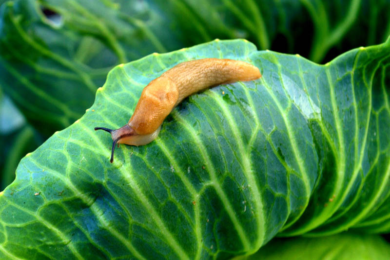

Slugs
Life of a Slug
life cycle of a slug is made up of three stages: egg laying, immaturity and adult. Although slugs can reproduce by themselves it is relatively uncommon. Slugs can over-winter at any stage in their life cycle. A slug can lay up to 500 eggs a year in batches of 10-50. The gelatinous eggs, which are 3-4mm across, are usually laid in crevices in the soil during the spring and autumn. In ideal conditions the eggs will hatch within 10 days, although hatching may be delayed by as much as 100 days in poor conditions, such as cold weather. There are 30 different types of slug in the British Isles. However, the four which cause the most damage are the grey field slug, the garden slug, the keel slug, which can tunnel up to one metre into the soil and causes root damage, and the black slug, which is the largest but tends to cause the least damage. In dry conditions, slug numbers fall where the eggs have become desiccated. Although slugs remain inactive in unfavourable conditions, they soon become active again in mild, damp weather.
Facts about Slugs
- A slug's slime absorbs water, which is why it's nearly impossible to wash it off your hands.
- Slugs leave their own individual scent trail so they can find their way home.
- A slugs slime contains fibres which prevents it from sliding down vertical surfaces.
- A slug smells with its tentacles.
Contact to learn more